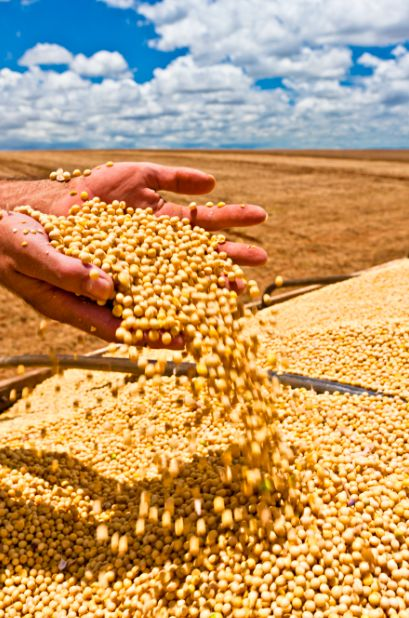

O agro é muito mais do que plantar e colher: é tecnologia,
inovação e sustentabilidade trabalhando juntas. No Brasil,
ele impulsiona a economia, gera empregos e coloca nossos
alimentos no mundo. Com ciência no campo e respeito ao meio ambiente,
o agro mostra que é possível produzir mais e preservar o planeta ao
mesmo tempo. O futuro do mundo passa pelo agro.
